Intro2024¶
72939 INGEGNERIA DEI SISTEMI SOFTWARE¶
enfasi sulla costruzione consapevole e motivata di artefatti basata su analisi, progettazione, sviluppo, distribuzione e manutenzione di prodotti |
|
si veda Sistema: cosa intendiamo? |
|
si veda Il software |
|
corso di laurea magistrale, con finalità diverse da quello di un corso di laurea triennale: la acquisizione di conoscenza e pratiche è rivolta principalmente alla formazione specialistica, alla progettazione e alla innovazione (di prodotto e di processo) |
Insegnamento |
https://www.unibo.it/it/didattica/insegnamenti/insegnamento/2023/468003 |
Virtuale |
|
Wooclap |
|
GITHUB del corso |
|
Lectures |
Intro2024 indice¶
Sistema: cosa intendiamo?¶
Sistema fisico ‘classico’
Sistema fisico quantistico
Sistema meccanico
Sistema logico (completo e/o consistente)
Sistema di elaborazione dell’informazione (hardware, computer)
Sistema software
…
Sistema vivente
Possiamo anche parlare di alcune proprietà generali:
Sistemi chiusi o sistemi aperti (alla informazione, energia, etc)
Sistemi statici o dinamici
Sistemi riduzionistici o sistemi olistici
Sistemi deterministici o non
Sistemi complessi e sistemi complicati
Sistemi osservabili e/o interagibili
Sistemi concentrati e sistemi distribuiti
Sistemi autoorganizzanti
…
Un sistema è tale perchè possiamo distinguere in esso più componenti, che occorre introdurre e definire in modo opportuno (come vedremo per i Componenti software).
Sistema software¶
In questa sede limiteremo la nostra attenzione ai sistemi software, intendendo per software l’insieme dei programmi che possono essere impiegati su un sistema fisico di elaborazione.
Il software¶
Storicamente, il software nasce come l’insieme di istruzioni-macchina che deve essere esguito da un computer su un insieme di dati per realizzare un algoritmo.
L’evoluzione di linguaggi ad alto livello ha quasi subito visto la introduzione di costrutti capaci di esprimere semplici forme di aggregazioni di istruzioni e dati (si veda Componenti software di base) che sono poi prpgressivamente evolute in veri e propri Componenti software.
L’uso del termine sistema software enfatizza, in genere, prodotti complessi, costruiti o studiati in termini della organizzazione e della interazione tra i componenti che formano il prodotto.
Vi è quindi una stretta relazione con il concetto di Archittettura software .
Viste di un sistema software¶
Un sistema software può essere descritto da diversi punti di vista. |
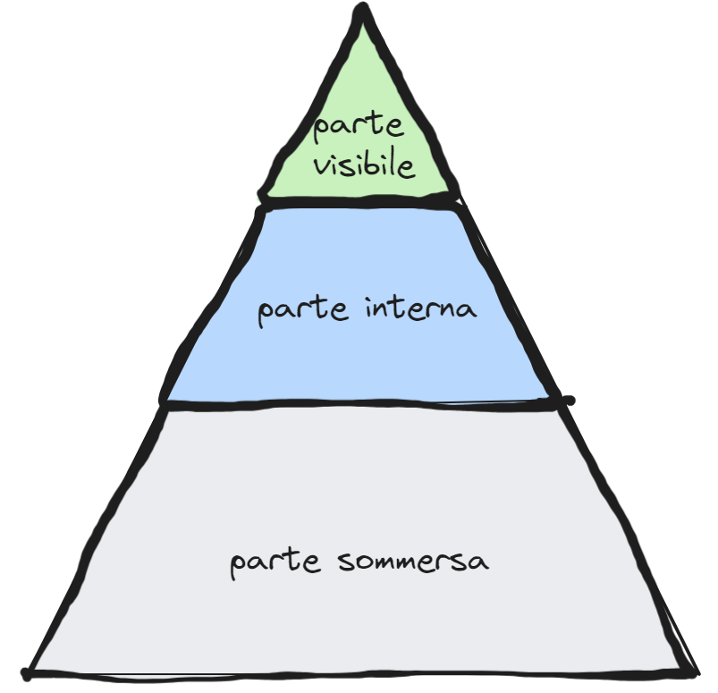 |
{kind=link}
Vista esterna¶
Il sistema viene visto come una entità accessibile attraverso una API (Application Programming Interface) intesa come il punto di contatto che consente l’interazione tra codici in esecuzione |
Vista interna¶
Il sistema viene visto come un insieme di enti computazionali (funzioni, oggetti, processi, etc.) che operano interagendo tra loro e con il mondo esterno (clienti, dispositivi, etc.) usando adeguati supporti |
Vista sommersa¶
Il sistema è l’ultimo livello (layer) di uno stack i cui livelli sottostanti (librerie, infrastrutura, etc. ) forniscono il supporto alla esecuzione. |
Nel corso degli anni sono stati proposti e usati diversi tipi di componenti software, che hanno contribuito a formare lo spazio concettuale dei linguaggi di programmazione di alto livello.
Componenti software¶
In generale, il concetto di componente software può essere definito come:
Questa idea di base ha subito una profonda evoluzione nel corso degli anni, tanto che occrrrebbe un corso ad hoc per descriverla.
Trascurando molti rilevanti aspetti, noi cercheremo di delienarne alcuni punti importanti sia sul piano concettuale, sia sul piano pragamatico delle moderne pratiche di costruione di sistemi sofwtare.
https://mia-platform.eu/it/blog/creare-componenti-software-componibili/
Componenti software di base¶
I linguaggi di programmazione più diffusi permettono di costruire sistemi software composti da due specie di componenti-base:
| 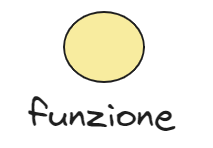 | Una funzione rappresenta un componente che permette la definizione parametrica di istruzioni e la loro esecuzione mediante trasferimento di controllo. Linguaggio di riferimento: |
| 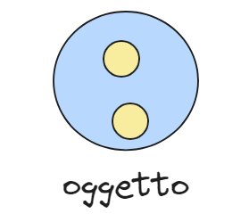 | Un oggetto incapsula uno stato e un insieme di funzioni (metodi), la cui esecuzione avviene mediante chiamata di procedura (trasferimento di controllo). Linguaggio di riferimento: Un oggetto può essere dotato di comportamento autonomo incapsulando un Thread. |
{kind=link}
{kind=link}
Oltre gli oggetti¶
Lo sviluppo delle reti informatiche e di Internet ha promosso la costruzione di sistemi software distribuiti su più nodi di elaborazione, su ciascuno dei quali possono essere eseguiti programmi espressi medianti linguaggi diversi.
La costruzione di sistemi software distributi eterogenei è resa possibile dall’uso (entro funzioni ed oggetti) di protocolli di comunicazione (come
UDP, TCP, HTTP, MQTT, CoAP, etc.) e richiede logicamente componenti capaci di interagire (spesso in modoasincrono) mediante e non più mediante trasferimento di controllo con chiamate di procedura.
Gli attori¶
I linguaggi di programmazione più diffusi non hanno ancora introdotto componenti intrinsecamente capaci di interagire a messaggi, evidenziando una lacuna che può essere colmata attraverso l’introduzione di librerie, come ad esempio la libreria Akka -> per Java/Scala, che trae ispirazione dal Modello computazionale ad attori ->.
Le motivazioni introdotte in Akka Actors -> sono condivise da molti e verranno prese anche qui come riferiemto.
Un modo alternativo, rispetto all’uso di una libreira, per introdurre componenti che operano come attori, è quello di definire un linguaggio di programmazione custom, con un adeguato livello di astrazione, avvalendosi di tecniche sviluppate nel campo dei Domain Specific Languages.
Questo approccio è stato adottatto per definire il linguaggio denominato qak, con lo scopo di esprimere concetti di alto livello (technology-independent) per definire componenti software capaci di interagire attraverso scambio di messaggi.
Il linguaggio qak
intende promuovere la definzione di modelli eseguibili di un sistema software, da utilizzare durante l’analisi di un problema e il progetto e lo sviluppo di prototipi di sistemi distribuiti. In molti casi, può anche essere usato per costruire il prodotto finale;
non è un linguaggio general-purpose, ma piuttosto un (si veda Metamodellazione ->) per la definizione e costruzione di architetture software distribuite;
introduce componenti software che portano in primo piano l’idea di attore e di interazione tra attori, lasciando sullo sfondo (nella parte sommersa) i dettagli implementativi, grazie alla Qak factory.
Attori qak¶
| 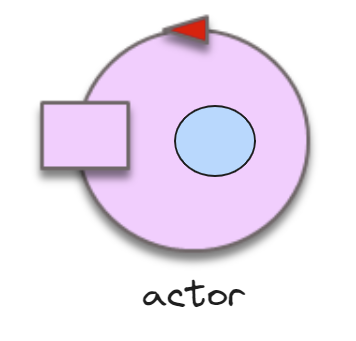 | Un attore è un componente software dotato di comportamento autonomo, capace di ricevere e trasmettere messaggi e di gestire i messaggi in modo da porre in esecuzione funzioni e/o oggetti. |
{kind=link}
Un sistema basato su attori tra componenti, prefigurando la possibilità che i componenti di uno stesso sistema possano eseere distribuiti su nodi di elaborazione diversi.
Per rendere concreta questa psssibilità, occorre l’introduzione di server e l’uso di protocolli di comunicazione con cui rendere possibile l’invio di messaggi avvalendosi delle infrastrutture di rete.
Per rendee questo dettaglio tecnologico trasparente a livello applicativo, il linguaggio qak introduce il concetto di contesto come elemento capace di abilitare il passaggio da conmunicazioni locali a comunicazione renote.
Contesti qak¶
| 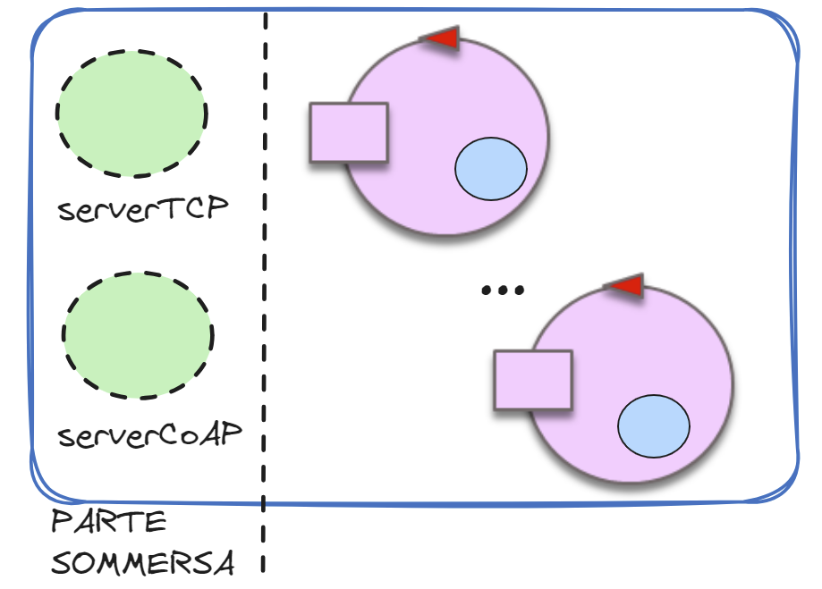 | Un contesto è un componente software
che gestisce (in modo sommerso) La parte sommarsa è fornita da una libreria che crea la Qak infrastructure. |
{kind=link}
Archittettura software¶
Una volta accettato che un sistema software sia composto da un insieme di componenti di una qualche
natura, il concetto di architettura assume, dagli anni 90 del secolo scorso
in avanti, un ruolo progressivamente più importante.
Evoluzione delle architetture¶
Si sviluppano e si affermano nuovi modi di concepire le architetture software, partendo non più da compoenenti come oggetti, ma da componenti orientati al Modello computazionale ad attori -> e che assumono la forma di servizi.
L’evoluzione delle architetture software può essere riassunta in una progressiva trasformazioni di un sistema monolitico in un sistema composto da micro servizi e nano servizi. |
Un attore qak può essere visto come un , con precise responsabilità, incluso in un contesto allocato su un nodo (fisico o virtuale) di elaborazione. |
{kind=link}
Architetture di integrazione¶
Nascono anche nuovi approcci alle
che consentano il flusso di dati tra sistemi e applicazioni software. |
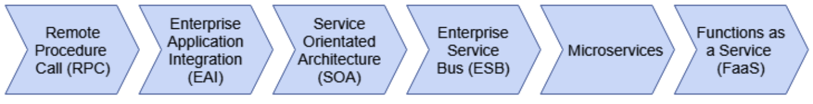
Nelle architetture di integrazione a microservizi, un ruolo-chiave è relativo ai diversi modi con cui è possibile far interagire gli attori |
{kind=link}
nano servizi¶
Il concetto di nano-servizio viene introdtto da AWS Lambda ->, come forma di FaaS -> (Function as a service) in cui le Funzioni offrono servizi accessibili in rete, liberando il loro progettista dalla necessità di occuparsi delle infrastrutture e della gestione dei server.
Le funzioni AWS Lambda -> possono anche agire come collante tra AWS Services -> concepiti come sorgenti di eventi a cui le funzioni stesse possono reagire.
Il linguaggio qak permette di modellare la struttura logica di architetture di questo tipo e di ragionare sulla loro possibile organizzazione.
Anche in questi caso il progettista non dovrà occuparsi delle infrastrutture e della gestione dei server, che viene realizata in modo sommerso nella Qak infrastructure. Ovviamente sarenno assenti le features legate alla scalabilità etc. ma l’intendo è di usare qak anche nella progettazione e nello sviluppo di applicazioni IOT e non solo cloud.
Metodologie per lo sviluppo del software¶
La necessità/opportunità di definire un’appropriata architettura del software è strettamente correlata al processo di definire, documentare e mantenere i del sistema.
Cosa e come¶
Mentre l’architettura del software si rivolge allo “spazio della soluzione” o al , la Ingegneria dei requisiti -> si rivolge allo “spazio del problema” o al .
Per costruire (capendo e motivando quello che si fa) occorre avere:
un insieme (evolutivo) di Principi ispiratori di rifermento
un modo compatto ed efficace di descrivere problematiche e scelte progettuali.
Auspicabilmente, questa descrizione dovrebbe essere comprensibile sia agli esseri umani sia alla macchina, al fine di evitare ambiguità e errori di ‘trascrizione’. L’uso di modelli qak è motivata da questa necessità.
|
|
Ma c’è ancora bisogno di questo con i ? Perchè non UsiamoChatGPT ?.
Modelli e metamodelli¶
| 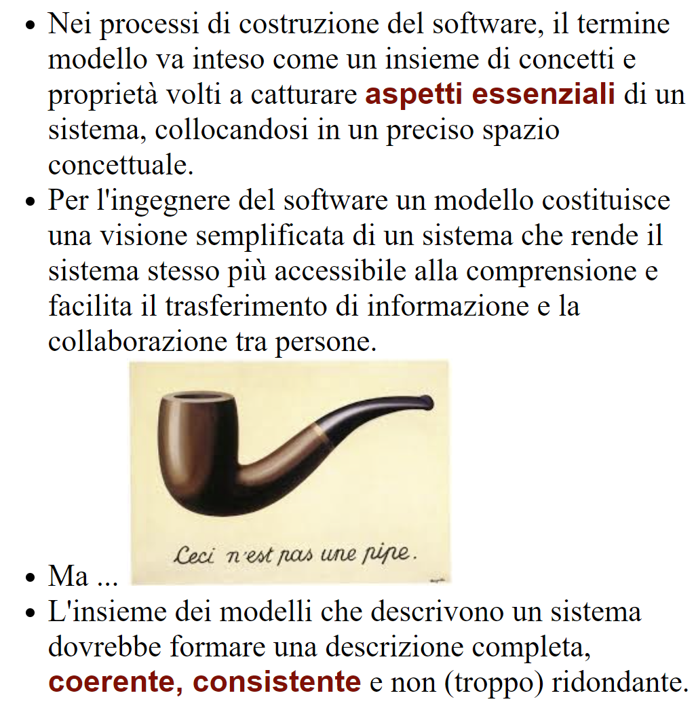 | 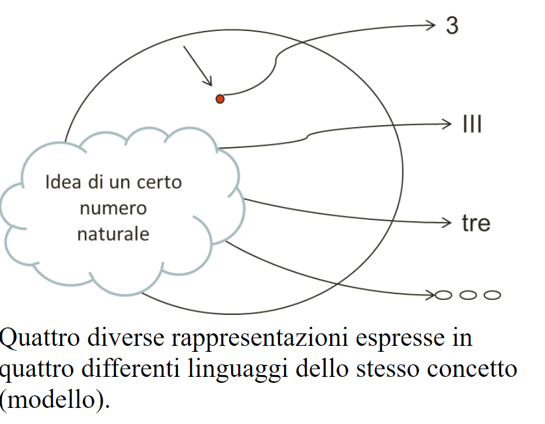 |
{kind=link}
{kind=link}
Processi BottomUp e TopDown¶
Nello sviluppo ‘naive’ del software la prassi è quella di procedere in modo , procedendo per sintesi, a partire dai componenti software a disposiione.
Nella costruzione di sistemi meccanici o di costruzioni edili questo metodo è ovviamente impossibile: occorre procedre in modo partendo dai requsiti e dalle problematiche che questi requisiti introducono.
La costruzione del prodotto deve essere preceduta da un progetto ‘sulla carta’, a sua volta preceduto da una accurata analisi del problema, per evitare che quanto costruito non soddisifi i requisiti o, peggio, non funzioni o crolli.
L’assenza di una accurata fase di analisi e di progettazione nel campo del software induce molti a pensare che i ‘programmatori’ non siano veri ingegneri.
La figura che segue mostra come sia possibile contrastare questo (immeritato) giudizio facendo sì che anche nello sviluppo del software la fase del COME (la codifica) sia prededuta da una opportuna analisi del COSA e da un progetto.
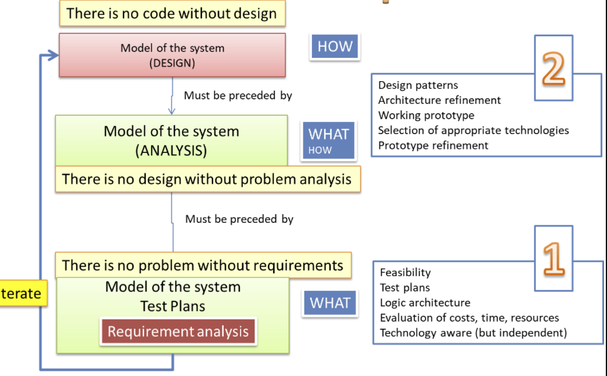{kind=link}
Il motto¶
Dall figura si evince un motto di riferimento anche per chi produce software:
Abstraction gap¶
Con il termine abstraction gap intendiamo denotare la distanza tra le mosse di base fornite da un automa o da un linguaggio di programmazione (general-purpose) e quelle necessarie per affrontare in modo adeguato un problema applicativo.
Un abstraction gap elevato induce ad impostare il processo di produzione in modo TopDown, cercando di trovare le strategie migliori per colmare il gap, scegliendo o sviluppando le tecnologie disponibili più opportune, che non sono più un assunto a-priori.
| 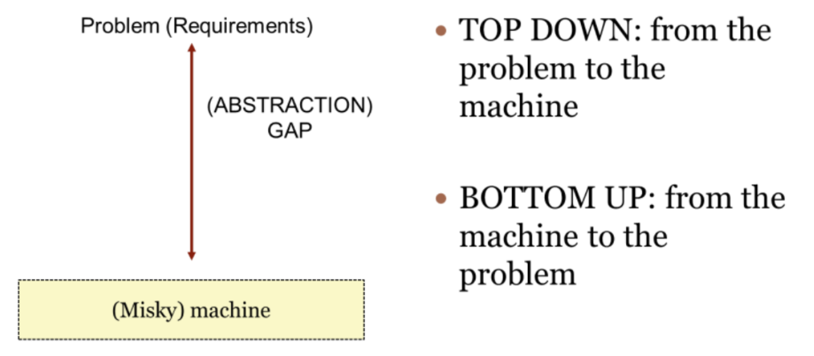 | 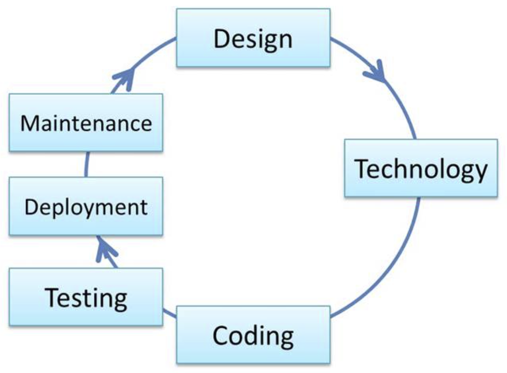 |
Principi ispiratori¶
Dovendo far precedere la codifica a un progetto, si può fare ricorso a un insieme di consolidati Principi, tra cui in particolare:
Un punto-chiave del ribaltamento del bottum-up a favore del top-down è che il progettista software:
è pienemaente consapevole e padrone delle tecnologie edegli strumenti di produzione, ma …
… pone al centro della sua attenzione il problema da affrontare nell’ambito di un preciso (modello del) dominio applicativo.
sfrutta la peculiarità del software (rispetto ai sistemi meccanici o edili) di essere facilmente modificabile adottando una Metodologia agile di tipo iterativo e incrementale di sviluppo.
{kind=link}
Evoluzione dei processi di produzione¶
Nell’ingegneria tradizionale (meccanica, edile, etc) il costo del materiale costituisce spesso più del 50% del costo totale di un progetto, mentre nella produzione del software è il costo del lavoro ad essere preponderante: si parte dal 70% fino a giungere quasi al 100%.
L’ingegneria tradizionale ha anche sperimentato che un cambiamento di costo 1 in fase di analisi potrebbe costare 1000 in fase di produzione.
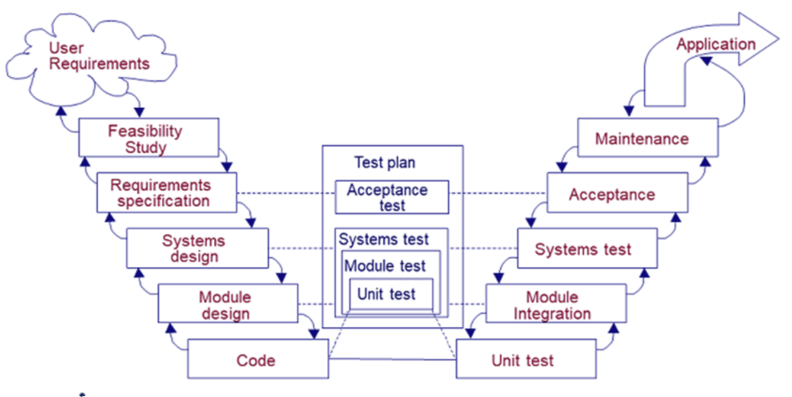 Per questo l’ingegneria classica diversifica le fasi di produzione delineando un ben noto flusso di lavoro (workflow) costituito da un insieme di passi (o tasks):
definizione e analisi dei requisiti
analisi del problema
progetto della soluzione
realizzazione del prodotto
collaudo
messa in opera e manutenzione
{kind=link}
Nella costruzione del software, il modello a cascata (waterfall ) porta spesso ad alti costi di produzione del software spesso dovuti al modello a cascata, a causa delle specifiche poco complete e ai molti interventi successivi per introdurre funzionalità non previste in partenza.
Capita, quindi, che le pecche del modello vadano a ricadere sulla manutenzione, causandone costi crescenti, o che, al contrario, si operi con una manutenzione sommaria producendo un software con un’implementazione che diverge dalle specifiche dei requisiti.
La letteratura (si veda ad esempio `SEDisasters`_) riporta inoltre casi di fallimento di un numero sorprendentemente rilevante di progetti software, evidenziando un insieme di cause principali:
Cattiva specifica e gestione dei requisiti.
Comunicazioni ambigue ed imprecise tra i diversi attori del processo di produzione (utenti, manager, analisti, progettisti, implementatori).
Architetture finali del sistema fragili (non robuste).
Inconsistenze tra requisiti, progetto e realizzazione.
Collaudi inadeguati o insufficienti.
Inadeguata capacità di valutare e gestire i rischi e di controllare la propagazione dei cambiamenti.
Queste potenziali fonti di insuccesso hanno amplificato la loro influenza nel momento in cui l’intera disciplina ha vissuto la transizione da una dimensione prevalentemente algoritmico-trasformazionale a un dimensione fortemente sistemistico-architetturale.
Processi agili e incrementali¶
Oggi si ritiene che un approccio INCREMENTALE sia indispensabile per aggredire la complessità del problema e per mettere in luce in primis gli aspetti PIU’ IMPORTANTI e PIU’ CRITICHE senza perdersi in dettagli che possono distogliere l’attenzione per formare un quadro generale di riferimento.
L’approccio AGILE descritto in SCRUM Guide è oggi un punto di riferimento.
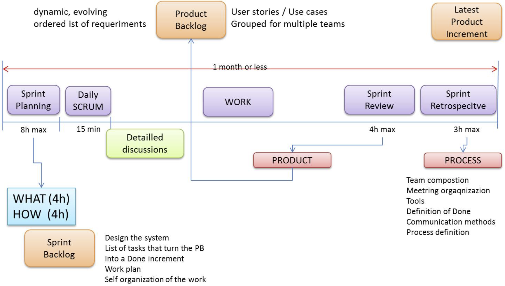{kind=link}
I vari SPRINT dovrebbero effettuare uno ZOOMING entro MACRO-COMPONENTI innescando un processo ITERATIVO di analisi, progetto , sviluppo e testing di quel componente o del SOTTOSISTEMA che lo SPRINT vuole costruire.
Si veda anche: Come organizzare gli sprint
: ISS2024